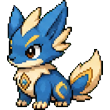

 Electric
Electric Light
LightTap a stage to read its story.
Aurkit trots through the Steel Fortress on four quick paws, its cobalt-blue fur threaded with gold-trim markings that light up faintly when it gets excited. Its fluffy yellow-orange tail wags so fast it becomes a blur, and small sparks trail off the tip whenever it wags near anything metal. Aurkit is drawn to the fortress's electrical conduits, pressing its nose against the walls and listening to the current hum inside. The fortress engineers discovered it could detect a failing cable before any instrument could - its ears flatten the moment a circuit wavers.
Field note: Aurkit's tail sparks visibly the moment a nearby electrical circuit begins to fail - the fortress engineers call it the living fuse.
Steel Fortress. Aurkit and its family are found in the Steel Fortress. See everyone who lives there.
Share a Bond Food that matches its types to become friends. Aurkit loves:
A Bond Food is not a trick. It joins your spirit with the Kimuro's spirit, and only when it chooses you.
Print the Kimuro adventure packs: mazes, cards, a board game and Bond Mark medals.
See the printable packs